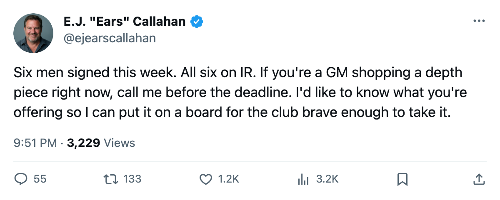
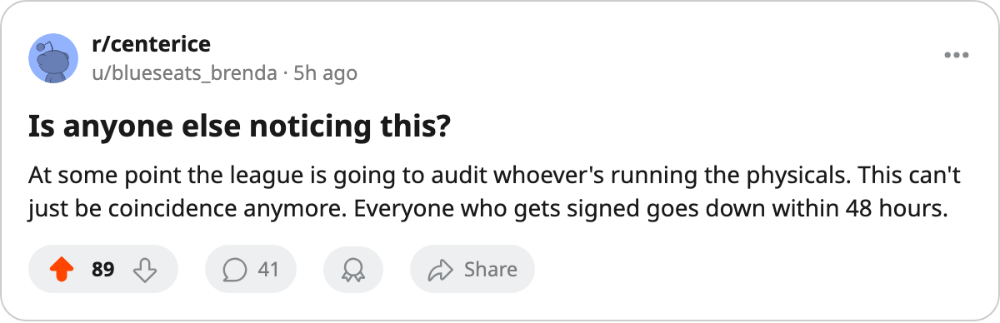

RUMOR METER: 6 Signings Filed This Week. All 6 Are on IR. 🔥🔥
A new consecutive streak starts at 6. The desk's last batch went 8 of 10. This one doesn't miss.
 E.J. "Ears" CallahanInsider · The Hot Stove
E.J. "Ears" CallahanInsider · The Hot Stove

Six new signings, six new IR designations, a new streak of 6

The league filed 6 signings between March 2 and March 3. Every man on that list sits on the injured list today.
The desk reported a consecutive run of 75 dead on March 4. The hit rate across that last batch of 10 tracked signings was 8 of 10. The 6 filed this week make it 6 of 6. A new streak starts here.
| Signing | Club | Salary | Overall | Body part | Return |
|---|---|---|---|---|---|
 Zigmund Palffy83 Zigmund Palffy83 | LA | $438,140 | 83 | ankle | April 6 |
 Ray Whitney82 Ray Whitney82 | DET | $545,940 | 78 | arm | March 30 |
 Petr Cajanek78 Petr Cajanek78 | VAN | $264,050 | 71 | foot | April 16 |
 Samuel Pahlsson70 Samuel Pahlsson70 | ANA | $312,020 | 71 | foot | April 23 |
| Bill Guerin | DAL | $235,300 | 89 | back | April 20 |
 Keith Carney72 Keith Carney72 | ANA | $6,840 | 75 | hip | April 8 |
Every injury carries the same designation window: between March 5 and March 7. Each man was healthy enough to sign and wasn't healthy enough to play two days later.
Bill Guerin is the highest-graded player in this group at 89. His back keeps  Dallas Stars without him until April 20. Zigmund Palffy walks into
Dallas Stars without him until April 20. Zigmund Palffy walks into  Los Angeles Kings for $438,140 with 83 overall and leaves the lineup with an ankle until April 6.
Los Angeles Kings for $438,140 with 83 overall and leaves the lineup with an ankle until April 6.  Detroit Red Wings paid $545,940 for Ray Whitney's 78 and got an arm instead, out March 30.
Detroit Red Wings paid $545,940 for Ray Whitney's 78 and got an arm instead, out March 30.
The cheapest deal was  Mighty Ducks of Anaheim's $6,840 for Keith Carney, a defenseman with 75 overall. Hip, out until April 8. The Ducks also signed Samuel Pahlsson ($312,020). Foot problem, out until April 23.
Mighty Ducks of Anaheim's $6,840 for Keith Carney, a defenseman with 75 overall. Hip, out until April 8. The Ducks also signed Samuel Pahlsson ($312,020). Foot problem, out until April 23.
 Vancouver Canucks brought in Petr Cajanek for $264,050. The Morale Scale has him at 100, tied for the highest mark in the league. He carried 55 games and 12.2 minutes a night before the foot took him out until April 16.
Vancouver Canucks brought in Petr Cajanek for $264,050. The Morale Scale has him at 100, tied for the highest mark in the league. He carried 55 games and 12.2 minutes a night before the foot took him out until April 16.
Penny contracts, no leverage
These aren't trade-deadline rentals. These are bottom-of-the-roster depth pieces on penny contracts, signed to plug holes. LA, DET, DAL and ANA each needed a body and each got one that broke.
A man who would know, in one of those dressing rooms: "We needed a body. We signed a body. The body didn't hold."
The trade deadline is 12 days away. What the calendar has as the deadline puts every team in this group 12 days from a hard choice: in or out. LA sits at 65 points in the Pacific, out of a playoff spot. DET at 75 clings to 2nd in the Central. DAL at 87 and ANA at 80 are in. None of these clubs made a move big enough to matter at the deadline. They made moves cheap enough to ignore.

